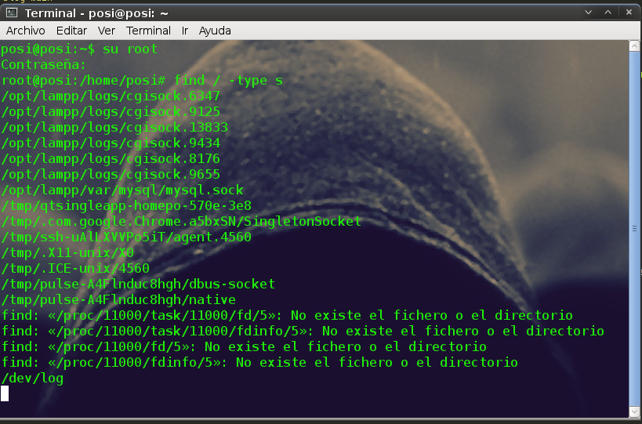

Blog Itodosoft-Sec

El dia de hoy me encontré con un error en el “emma”, que es mi software para la gestión de bases de datos el error era el siguiente '/ var / run / mysqld / mysqld.sock' (2) ' a continuacion te cuento como lo solucione con un poco de ayuda que encontre en http://stackoverflow.com/
root@posi:/home/posi# find / -type s/opt/lampp/var/mysql/mysql.sockroot@posi:/home/posi# nano /etc/mysql/my.cnf
#
# * Basic Settings
#
user = mysql
pid-file = /var/run/mysqld/mysqld.pid
socket = /opt/lampp/var/mysql/mysql.sock #Aquí añadimos la ruta del mysql.sock :)
port = 3306
basedir = /usr
datadir = /var/lib/mysql
tmpdir = /tmp
lc-messages-dir = /usr/share/mysql
skip-external-locking
#
root@posi:/home/posi# cd /var/runroot@posi:/var/run# mkdir mysqldroot@posi:/var/run#ln -s /opt/lampp/var/mysql/mysql.sock /var/run/mysqld.sock